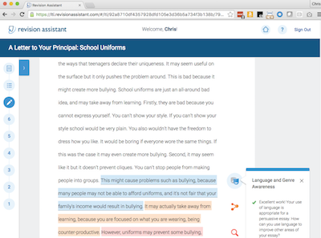
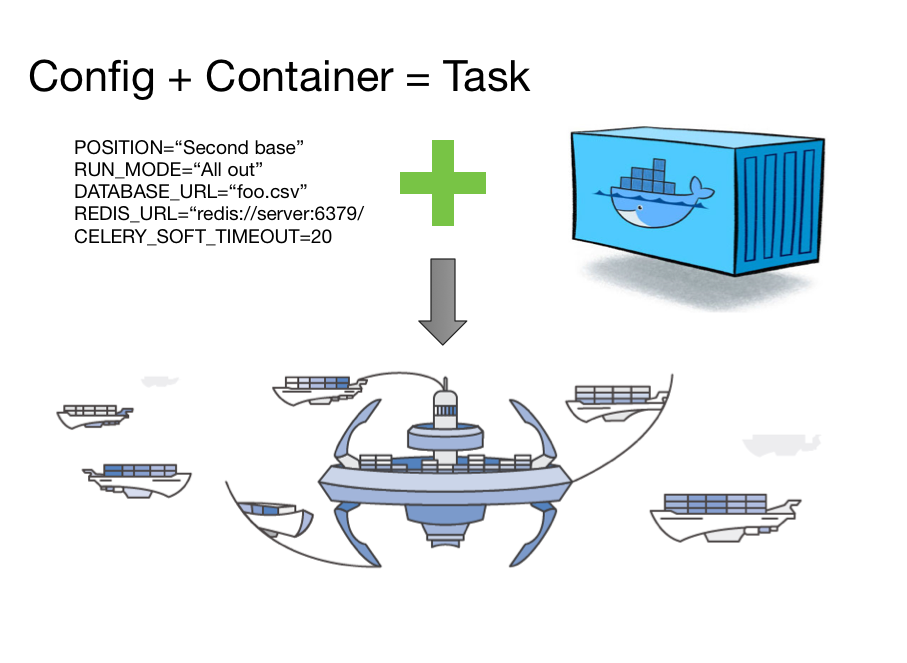
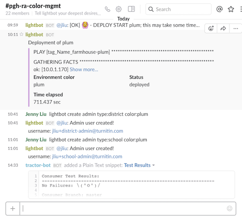

Microservices: moving parts around
Chris Winters
@cwinters
Turnitin
What are we doing here?
Talk about moving parts behind microservices
Why are we using microservices, and what are our plans?
How do they help and hinder?
Initial questions
Docker
Microservices
AWS/Azure/Google/...
Context
Where we started: Revision Assistant
Pittsburgh company! (previously: Lightside Labs)
Use machine learning to help students write better
Focus on drafting process rather than scoring against standards
Where we started: architecture
(TODO image here)Where we are now: architecture
(TODO image here)Where we want to be: architecture
(TODO image here)Why not?
Operating a single app is way easier
Easier to propagate patterns within single codebase
Everything is in one place...
...code and admin tools (Django)
Why not?
Reaching into another table is easy
No network call boundaries (latency)
Why?
Keep a thing in your head
Independence (concurrent projects)
...both of which help with speed
Disentangle via forced separation
Why?
Make side-effects explicit
Small vectors for experimenting
Scale at more granular level
Why? (Conway's Law)
...doesn't really apply to us, yet
But... I can do that now
Are microservices the only way to do these?
...but few teams exhibit discipline to do them in monolith
Prefer guardrails over recipes
Provide constraints in areas of uncertainty
...to enable freedom to experiment in others
What are the moving parts?
Deployment and configuration
Routing and load balancing
Monitoring
Logging
Recovery
12 Factor Echo
Smart people have already thought about this design
You really need to internalize this document and goals.
Just a few:
3. Config: Store in the environment
4. Backing services: Treat as attached resources
11. Logs: Treat as event streams
ECS basics
"Cluster": EC2 instances providing compute pool
"Task definition": immutable metadata to run container
- Resource constraints
- Environment (12 Factor: 3)
- Docker image
- Linked containers
- ...stuff you use with docker run...
ECS basics
ECS basics: run types
"Run task": go now, n times, and leave when you're done
"Service": go now, n times, and stick around...
...updates, rolling deploys, ELB, and autoscaling
ECS: bare bones
Developing a feature
Feature branch: work work work => push
Slack: make me a color environment
Slack: run end-to-end-tests
Slack: make me some classes
Test test test...
Developing a feature
code review
PR to staging, merge => deploys
PR to production, merge => deploys
Slightly different for front-end and services
Environments
Local + "Color"
All containers on one host
Includes datastores
Front-end deployed to S3
Extra containers for router, docs*, mail
"Color"?
Deployable with slack
Specify different branches for different services
...against Factor 10, but: "similar as possible"
Constrain at Docker, assume other differences minimized for these purposes
Types of services
Basic flow from API call through the system


Sidebar: Missing factor
Documentation
First idea: one document to rule them all
What do you really want?
One place to read
Different than one place to write
Your instinct is to control at the wrong level
It's what you're comfortable with
You are mutable
Solve that problem instead
Control the format (swagger) and API (/service/docs)
Tool to collect and merge (spider-doc)
Everything is a container
Control allows leverage
What are we here for?
What are they? (assumed)
How do we use them?
What do they offer?
What should you constrain?
My biases and context
Small teams, small-ish companies
My biases and context
Deeply skeptical of magic
Relational database pro, ORM con
My biases and context
Kernighan on debugging applies to more than code
Ease cognitive load
Side-effects kill
A change in feature X also changes feature Y
Second order effect: fear, uncertainty, and doubt
Response: slather on that process!
Constraints over control
What does that even mean?
Constraints: define the boundaries of a thing and let whatever happens in the boundary happen
Control: define both what a thing must do and how it must do its job
I prefer:
— ElisabethHendrickson (@testobsessed) May 6, 2015
- Recovery over Perfection
- Predictability over Commitment
- Safety Nets over Change Control
- Collaboration over Handoffs
Straw man?
"But Chris, you just made those definitions up!"
Example: HTTP
Example: logging
Example: migrations
Example: code layout
Example: testing
You control what you know
Guardrails, not blinders
- Constraints in areas where you know your team (or teams in general) are prone to get things wrong. Are microservices the only way to get isolation, bounded contexts, independent deployability, no side-effects, etc. Nope. But many (all?) of the other ways require a discipline I've seen few teams exhibit.Resources and references
- James Lewis and Martin Fowler: Microservices in a Nutshell which is a excerpted form of this article (Thoughtworks)
- Fight Club: "Stop trying to control everything and just let go..."
- Conway's Law (wikipedia); Sam Newman: Demystifying Conway's Law (Thoughtworks) and the Lewis/Fowler article above also has a section titled "Organized around Business Capabilities" that describes it well
- "You build it, you run it" Werner Vogels print interview (2006); also this podcast interview from the same time.
Resources and references
- 12 Factor Apps, plus a Cloud Native spin on them from @caseywest
- Casey also gave his Minimum Viable Platform talk at Devopsdays Minneapolis a week and a half ago.
- Adrian Cockroft has given loads of talks, this is a kind of best-of: Migrating to Cloud Native with Microservices, which includes a brief discussion of building per-service clients (slide 122).
Resources and references
- Steve Yegge's platform rant
- Dan North: Microservices: Software that fits in your head; you should just go ahead and watch his other presentations, including this one (from 2009!) that talks about the relationship between architecture and teams
- My pinboard links: microservices | architecture | docker | aws (you see the pattern...)